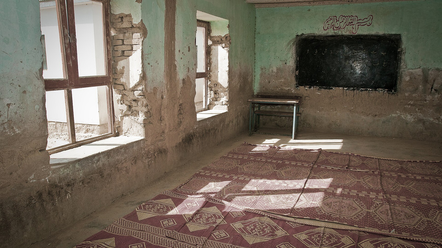

受験案内で最初に読む5か所
受験資格・手数料の返還・免除・申込期間・試験地。この5つは、どの試験の受験案内にもほぼ必ず書かれています。

受験案内は、実施団体が毎年出す配布物です。多くはPDFで公開されていて、申し込みの条件と締切が、そこにまとまって書かれています。
読む順番を決めておくと、見落としが減ります。ここでは、どの試験にもほぼ共通して置かれている5つの項目を並べます。
1つめ｜受験資格
学歴、実務経験の年数、年齢、他の資格の保有など、受けられる人の条件です。ここに当てはまらない場合、申し込んでも受け付けられません。
実務経験が条件になっている試験では、証明する書類の様式まで指定されていることがあります。書類の準備に時間がかかるため、最初に確かめる価値があります。
2つめ｜手数料と返還の規定
受験手数料の額と、支払方法が書かれています。あわせて確かめたいのが、いったん納めた手数料の扱いです。
多くの受験案内には、納入された受験手数料は返還しないという規定が置かれています。受けられなくなった場合でも戻らないため、申し込む時期の判断に関わります。
| 読む順 | 項目 | 確かめること |
|---|---|---|
| 1 | 受験資格 | 学歴・実務経験・年齢・他資格の保有 |
| 2 | 手数料 | 額、支払方法、返還されるかどうか |
| 3 | 免除 | 科目免除の条件と、有効な期間 |
| 4 | 申込期間 | 締切の日時、消印か到着か |
| 5 | 試験地 | 会場の選び方と、変更できるか |
3つめ｜科目の免除
前回の試験で一部の科目に合格している場合や、他の資格を持っている場合に、科目が免除される仕組みです。免除には有効な期間が決められていることがあります。
免除を受けるには、申し込みのときに申告と証明が必要です。あとから申し出ても認められない扱いが一般的で、申込書の記入時が期限になります。
4つめと5つめ｜申込期間と試験地
申込期間は、開始日と締切日の両方を見ます。郵送の場合、締切が消印の日付なのか、到着の日付なのかで、投函できる最終日が変わります。
試験地は、希望を出す形と、あとから指定される形があります。会場が遠い地域では、前日の移動と宿泊の費用も含めて考える必要が出てきます。
この5つを読み終えたら、申込書の様式に一度目を通しておくと、必要な書類が先に分かります。証明写真の規格が決まっている試験もあります。
受験案内はいつ出るか
受験案内は、申込期間の少し前に、実施団体のサイトで公表されるのが一般的です。前年度の案内が残っている場合は、年度の表示を確かめる必要があります。
日程や手数料は年度ごとに変わることがあります。古い案内を読んだまま準備を進めると、締切や必要書類が食い違うことになります。
試験の内容が変わるときは、実施団体が事前に告知を出します。出題の範囲や科目の構成が変わる年は、告知のページもあわせて見ておく形になります。
案内がPDFで公開されている場合は、手元に保存しておくと、あとから条件を確かめ直せます。公開が終わると読めなくなることがあります。
各試験の受験案内（実施団体が公表しているもの／2026年9月2日に確認）
この記事は、受験案内に共通して置かれている項目を整理したものです。額や日程は試験ごとに違うため、必ず受ける試験の受験案内でご確認ください。
特定の試験の手数料や日程は、このサイトでは扱っていません。
ここに広告を置きます。広告が入っても、記事の順番や書いてある内容は変えません。